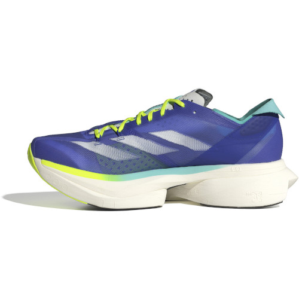
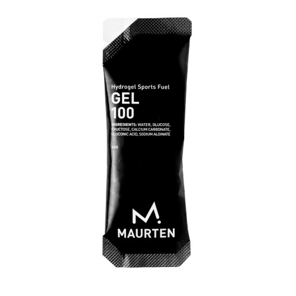

Shoes (Road)
Adidas Adios Pro 3

We don’t run to prove a thing. Not to look tough. Not to look clean. Running isn’t therapy or virtue. It’s noise against the silence. Our way of saying we’re still here. Life’s empty? Fine! We’ll make our own noise. No one’s handing meaning out anyway. So we take it mile by mile, turning routine into rebellion. The road doesn’t care who you are. It won’t like you, it won’t hate you. It just gives back what you put in. No fake toughness, no mindset sermons. The loudest ones usually stop first. Real discipline shows up quietly and stays.
We’ve seen the sellouts, the fakes, the borrowed muscles and filtered pain. Keep it. We’re not here for applause. Running strips it all. The lies, the noise, the performance. What’s left is real. That’s enough. No science theatre, no grind gospel. No borrowed wisdom, no pretend humility. Just legs, lungs, and honesty. We don’t run to perform. We run to exist. To live forever, right now. No stage, no sponsor, no permission.
I’m Eren Öğrül. I live in Amsterdam with my wife and three rescue cats. I spend my days as a privacy engineer. Running’s my way of cutting through the noise. Same discipline, fewer screens, more truth.
I’ve watched running turn into a circus. Everyone’s a guru, a brand, a walking slogan. Pain’s for sale, motivation’s a costume. The ones shouting about toughness are selling T-shirts. The ones preaching discipline are counting likes.
I’ve seen shortcuts dressed as work, enhancements posing as effort, and truth swapped for hashtags. None of that moves. It performs.
Beyond the Pace started as a quiet refusal. No sponsors, no slogans, no shiny grit. Just the craft. Just the motion.
I don’t run to prove a thing. I don’t run to inspire anyone. I run to see what’s left when everything fake burns off. If that’s nothing, fine. At least it’s real.

Tap a day, get the plan. Four months laid bare.
The stuff I actually use. No sponsors, no sales pitch. Works today, maybe not tomorrow. That’s how it goes.
Adidas Adios Pro 3
Nike Ultrafly
Coros Pace Pro
Nike Flex Stride

Biolite 325

Maurten 100
I DO NOT sell/promote/affiliate/give anything.
Wondering about training or the tools? Drop it here. No small talk needed.